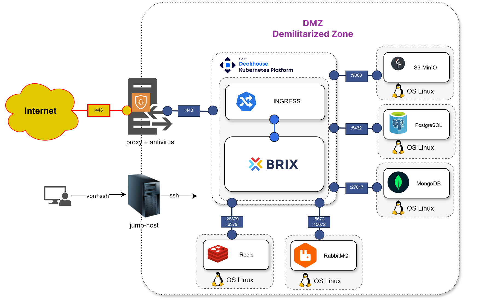

To maximize the performance and security of the BRIX system, it is important to properly configure the firewall and deploy key components such as the BRIX application and DBMS.
BRIX is a microservice solution that utilizes Golang, NodeJS, Angular, PostgreSQL, MongoDB, RabbitMQ, Redis, Docker, Kubernetes, and S3 MinIO protocol for file storage.
This article describes the key aspects that help optimize and secure application performance.
- The location of the application and DBMS in the DMZ (Demilitarized Zone) minimizes risks of unauthorized access to internal resources.
Access should be strictly controlled with the help of a firewall. This way you will limit access to the internal network and reduce the risks of attacks. The interaction between the application and DBMS must be performed through secure communication channels.

- Firewall configuration that controls incoming and outgoing traffic, blocking potentially dangerous connections. For BRIX, it is recommended that you configure the firewall as follows:
- Open only those ports that are necessary for system operation. For example: port 443 (HTTPS) for communication with users, internal ports for communication between microservices (e.g. RabbitMQ, Redis, MinIO).
- Close all ports that are not used by the system to minimize the attack surface.
- Restrict access to the DMZ to only certain IP addresses or subnets using restriction rules or VPN. This will help prevent unauthorized access to the application.
- Add ports 443 to exceptions for access to the registry (
hub.elma365.tech) and repository (repo.elma365.tech).
- Antivirus software may slow down system performance, especially if it inspects traffic between containers and DBMS. To minimize this impact, it is recommended to:
- Install antivirus on the reverse proxy. This will allow only incoming and outgoing traffic on the DMZ boundary to be inspected without affecting internal communications between the application and DBMS.
- Exclude internal ports from inspection. Add ports used for communication between microservices (for example, RabbitMQ, Redis, MinIO ports) to antivirus exclusions. This will speed up data exchange within the system.
- Exclude DBMS files from inspection. Since database files do not contain malicious code, scanning them with antivirus is not useful and slows down the DBMS.
- To improve the security, performance, and manageability of the system, we recommend using Linkerd - lightweight service mesh. It adds features to Kubernetes such as transparent traffic encryption, load balancing, and traffic management. Linkerd automatically encrypts all traffic between microservices using mTLS (mutual TLS). This protects data in transit between containers within a Kubernetes cluster.
- To ensure system high availability, set up regular data backups.
For network communication between servers at the infrastructure level, open the ports listed below. For more details, please refer to the official Deckhouse documentation.
Traffic between master nodes
Port |
Protocol |
Purpose |
2379, 2380 |
TCP |
etcd replication |
4200 |
TCP |
Cluster API webhook handler |
4201 |
TCP |
VMware Cloud Director cloud provider webhook handler |
4223 |
TCP |
Deckhouse controller webhook handler |
Masters to nodes traffic
Port |
Protocol |
Purpose |
22 |
TCP |
SSH for Static nodes bootstrapping by static provider |
10250 |
TCP |
kubelet |
4221 |
TCP |
apiserver bashible for delivering node congifurations |
4227 |
TCP |
runtime-audit-engine webhook handler |
Nodes to masters traffic
Port |
Protocol |
Purpose |
4234 |
UDP |
NTP for time synchronization between nodes |
6443 |
TCP |
kube-apiserver for controllers working in node’s host network namespace |
4203 |
TCP |
machine-controller-manager metrics |
4219 |
TCP |
Proxy for registry packages registry-packages-proxy |
4222 |
TCP |
Deckhouse controller metrics |
Nodes to nodes traffic
Port |
Protocol |
Purpose |
ICMP |
ICMP for node-to-node connectivity monitoring |
|
7000–7999 |
TCP |
DRBD replication for sds-replicated-volume |
8469, 8472, 4299, 4298 |
UDP |
VXLAN for pod-to-pod traffic encapsulation |
4204 |
TCP |
Debug for Deckhouse controller |
4205 |
TCP |
ebpf-exporter module metrics |
4206 |
TCP |
node-exporter module metrics |
4207, 4208 |
TCP |
ingress-nginx controller metrics for HostWithFailover inlet |
4209 |
TCP |
Kubernetes control plane metrics |
4210 |
TCP |
kube-proxy metrics |
4211 |
TCP |
Cluster API metrics |
4212 |
TCP |
runtime-audit-engine module metrics |
4213 |
TCP |
kube-router metrics |
9695 |
TCP |
sds-node-configurator agent metrics |
3367 |
TCP |
API of the sds-replicated-volume module agent |
9942 |
TCP |
sds-replicated-volume agent metrics |
49152, 49153 |
TCP |
VM live migration port in Deckhouse Virtualization Platform |
4218, 4225 |
TCP |
Synchronization via the memberlist protocol for the speaker components of the metallb modules |
4218, 4225 |
UDP |
Synchronization via the memberlist protocol for the speaker components of the metallb modules |
4220, 4226 |
TCP |
Metrics of the speaker components of the metallb modules |
4224 |
TCP |
node-local-dns metrics |
4240 |
TCP |
Port for the healthcheck of neighboring nodes in CNI Cilium |
4241 |
TCP |
Metrics of CNI Cilium agents |
4242 |
TCP |
Metrics of CNI Cilium operator |
4244 |
TCP |
API for the cilium-hubble module |
External traffic to master nodes
Port |
Protocol |
Purpose |
22, 22322 |
TCP |
SSH for Deckhouse Kubernetes Platform initialization |
6443 |
TCP |
Direct access to apiserver |
External traffic to frontend nodes
Port |
Protocol |
Purpose |
80, 443 |
TCP |
Application ports for requests to Ingress controller over HTTP and HTTPS. Please note that these ports are configured in the IngressNginxController resources and may vary in different setups |
5416 |
UDP |
OpenVPN |
5416 |
TCP |
OpenVPN |
10256 |
TCP |
Healthcheck port for external balancers |
30000–32767 |
TCP |
NodePort range |
External traffic for all nodes
Port |
Protocol |
Purpose |
53 |
UDP |
DNS |
53 |
TCP |
DNS |
123 |
UDP |
NTP for external time server synchronization |
443 |
TCP |
Container registry |
Connection to DB
Port |
Protocol |
Purpose |
5432 |
TCP |
Standard port for connection to PostgreSQL databases |
5000 |
TCP |
Standard port for communication with the master node in the Patroni cluster |
5001 |
TCP |
Standard port for communication with the slave node in the Patroni cluster |
8008 |
TCP |
Standard port for access to REST API Patroni used for cluster management |
27017 |
TCP |
Standard port for connection to MongoDB databases |
6379 |
TCP |
Standard port for connection to Redis databases |
26379 |
TCP |
Standard port for connection to Redis Sentinel databases |
5672 |
TCP |
Standard port for AMQP (Advanced Message Queuing Protocol) used by RabbitMQ for sending messages between apps |
5671 |
TCP |
Standard port for AMQP, protected version of port 5672 used for AMQP with encryption over TLS/SSL |
15672 |
TCP |
Standard port for RabbitMQ control web-interface |
15671 |
TCP |
Standard port, protected version of port 15672 used for RabbitMQ web-interface with encryption over TLS/SSL |
9000 |
TCP |
Standard port for connection to S3 compatible Minio object storage |
The directories /opt/elma365/ and /var/lib/docker/overlay2/, as well as the following databases and processes, should also be included in the exceptions:
- BRIX application databases:
- /opt/bitnami/postgresql/bin/postgres
- /opt/bitnami/mongodb/bin/mongod
- /opt/bitnami/mongodb/bin/mongo
- redis-server
- /opt/bitnami/redis/bin/redis-server
- /opt/bitnami/erlang/lib/erlang/erts-12.3.1/bin/beam.smp
- /opt/bitnami/rabbitmq/sbin/rabbitmq-server
- minio
- /opt/bitnami/minio/bin/minio server
- BRIX application processes:
- /bin/sh
- /coredns
- /hostpath-provisioner
- /nginx-ingress-controller
- /opt/bitnami/erlang/lib/erlang/erts-12.3.1/bin/epmd
- /sbin/dinit
- /snap/microk8s/3410/bin/containerd
- /snap/microk8s/3410/bin/containerd-shim-runc-v1
- /snap/microk8s/3410/kubelite
- /srv/elma365ctl-server
- /usr/bin/dumb-init
- /usr/bin/kube-controllers
- /usr/libexec/git-core/git-daemon
- /usr/local/bin/node
- /usr/local/bin/runsvdir
- calico-node
- git daemon
- gpg-agent
- nginx: cache manager process
- nginx: master process
- nginx: worker process
- runsv
- sh
- BRIX internal processes.
Found a typo? Select it and press Ctrl+Enter to send us feedback